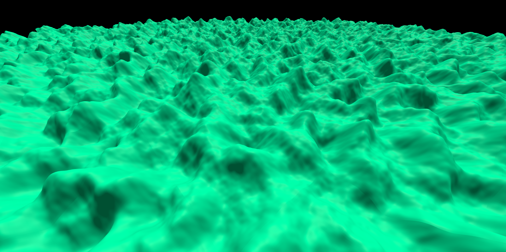

Name:
Gabriel Bacon
Student ID:
1991497
Program:
5
Date:
03/15/2023
Features
This Project uses ThreeJS and a Perlin Noise Library to create procedural terrain. A noise generator class uses the perlin noise functions supplied by the library to generate a detailed noise maps. This noise map is made of several layers of perlin noise with each layer having its frequency and amplitude lowered. The generated noise map is then passed off to a TerrainGenerator class, that converts the array of height values supplied by the noise into a mesh. This process is then run for the chunks in range of the user camera, which allows the user to fly around an infinately generating world.
This project forced me to understand and become more comfortable with camera view coordinates. Much of my time was spent of correctly rotating the camera in response to user input, which was surprisingly involved, even using a library like ThreeJS. Because of this, I had to scale my project back a bit, as I originally wanted to use a 3D noise map passed through the Marching Cubes Algorithm. I also had to practice procedural mesh generation to create the terrain from a noise map.

Driver
JavaScript
main.js
Resources
Noise Library